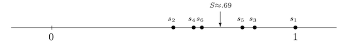

Chapter 4 Series#
4.1 Motivation#
Consider the infinite series
If we naively begin adding from the left-hand side, we get a sequence of what are called partial sums [1]. In other words, let \(s_n\) equal the sum of the first \(n\) terms of the series, so that \(s_1 = 1, s_2 = 1/2, s_3 = 5/6, s_4 = 7/12,\) and so on. One immediate observation is that the successive sums oscillate in a progressively narrower space. The odd sums decrease (\(s_1 > s_3 > s_5 > \cdots\)) while the even sums increase (\(s_2 < s_4 < s_6 < \cdots\)).
{kind=link}
It seems reasonable -and we will prove- that the sequence \((s_n)\) eventually hones in on a value, call it \(S,\) where the odd and even partial sums “meet”.
At this moment, we cannot compute \(S\) precisely, but we know it falls somewhere between \(7/12\) and \(5/6.\) Summing a few hundred terms suggests that \(S \approx 0.69.\) Whatever its value, there is now an overwhelming temptation to write
meaning, perhaps, that if we could indeed add up all, infinitely many, of these numbers, then the sum would equal \(S.\) A more familiar example of an equation might be
the only difference being that in the second equation we have a more recognizable value for the sum (sum of a geometric series with ratio \(1/2\)).
But now for the crux of the matter: The symbols \(+, -,\) and \(=\) in the preceding equations are deceptively familiar notions being used in a very unfamiliar way. The crucial question is whether or not properties of addition and equality that are well understood for finite sums remain valid when applied to infinite objects such as (8). The answer, as we are about to witness, is somewhat ambiguous.
Treating (8) in a standard algebraic way, let’s multiply through by \(1/2\) and add it back to equation (8):
Now, look carefully at the result. The sum in (9) consists precisely of the same terms as those in the original (8) only in a different order. Specifically, the series in (9) is a rearrangement of (8) where we list the first two positive terms \(\left(1+\frac13 \right)\), followed by the first negative term \(\left( -\frac12 \right),\) followed by the next two positive terms \(\left(\frac15+\frac17 \right),\) and then the next negative term \(\left( -\frac14 \right).\) Continuing this, it is apparent that every term in (9) appears in (8) and vice versa. The rub comes when we realize that (9) asserts that the sum of these rearranged, but otherwise unaltered, numbers is equal to \(3/2\) its original value. Indeed, adding a few hundred terms of (9) produces partial sums in the neighbourhood of \(1.03.\) Addition, in this infinite setting, is not commutative!
Let’s look at a similar rearrangement of the series
This series is geometric with first term \(1\) and common ratio \(r = -1/2.\) Using the formula \(1/(1 - r)\) for the sum of a geometric series, we get
This time, some computational experimentation with the “two positives, one negative” rearrangement
gives partial sums quite close to \(2/3\) (the sum of the first 30 terms, for instance, equals \(0.666667,\) i.e., more or less what we were “expecting”. What’s going on??? These two examples seem to suggest that infinite addition is commutative in some instances (the last case) but not in others (like the one we started with, \(\displaystyle \sum_{n=1}^{\infty} \frac{(-1)^{n+1}}{n}.\))
It is the pathologies that give rise to the need for rigour. A satisfying resolution to the questions raised will require that we be absolutely precise about what we mean as we manipulate these infinite objects. It may seem that progress is slow at first, but that is because we do not want to fall into the trap of letting the biases of our intuition corrupt our arguments. Rigorous proofs are meant to be a check on intuition, and in the end we will see that they actually improve our mental picture of the mathematical infinite. As a final example, consider something as intuitively fundamental as the associative property of addition applied to the series \(\displaystyle \sum_{n=1}^{\infty} (-1)^n.\) Grouping the terms one way gives
while grouping in another yields
The moral of the story so far is that manipulations that are legitimate in finite settings do not always extend to ** infinite** settings. Deciding when they do and why they do not is one of the central themes of Analysis. Thankfully, it turns out that we have already done all the heavy lifting because the theory of “infinite summation” is based on the theory of limits of sequences!
What’s covered in this chapter:#
Given a sequence \((a_n)_{n \in \mathbb{N}}\), we can try to make sense of the sum of its terms, \(\displaystyle \sum_{n=n_0}^\infty a_n,\) starting from some \(n_0 \in \mathbb{N}.\) We call this infinite sum a series. We define such an infinite sum via a limit, when it exists. You have already seen and worked with series in MAS106, but without knowing the formal definition of limit. So now we will revisit this material in a more rigorous way.
4.2 Convergence of infinite series#
Definition 18
Let \((a_n)\) be a sequence of real numbers. An infinite series is a formal expression of the form
We consider the associated sequence \((s_n)\) of partial sums, where
We say that the sequence \((a_n)\) is summable if the sequence \((s_n)\) of partial sums converges, and we will call this limit the sum of the infinite series.
Remark 8
The “summation” doesn’t have to start from \(n=1\); any \(n_0 \in \mathbb{N}\) is fine and then the definition is
What “formal expression” means here is simply that we can write down the infinite sum without worrying about whether it exists, i.e., whether we can associate to this “sum” the limit of its partial sums sequence. In other words, the limit of the partial sums may or may not exists, but we can always write down those symbols. When the limit doesn’t exist, this series is an object we simply can’t work with (in the sense that we can’t associate a “sum” to it, associativity/commutative/other natural properties do not hold when it comes to this series).
Regarding the partial sums: This is the truncated infinite sum in the case where we kept the first \(n\) terms. And \(n\) varies. This means that we are looking at the following sequence:
where
You can think of the terms of the sequence, as the “sum of terms so far”.
In the case where the limit of the sequence of partial sums exists, we write
or more informally
If the sequence \((a_n)\) is summable, we also say the series \(\displaystyle \sum_{n=1}^\infty a_n\) converges. This is less formal language than the above, as we are using \(\displaystyle \sum_{n=1}^\infty a_n\) for both the sequence of sums, and the number it converges to (if any). However, it does not cause problems in practice.
Example 24
Consider the geometric series
where \(a\) and \(r\) are fixed real numbers, with \(a\neq 0\). For which \(r\) does this converge? And what is the limit in that case?
Solution
There is a pretty well-known trick to find the sum of a geometric series, when \(|r|<1\), which involves finding a clean expression for the partial sums.
Let \(\displaystyle s_n = a + ar + ar^2 + ar^3 + \cdots + ar^n.\) We will multiply this finite sum by the ratio \(r\)
to get \(\displaystyle rs_n = ar + ar^2 + ar^3 + \cdots + ar^n + ar^{n+1},\)
which we will subtract from \(s_n:\)
As \(r\neq 1\) we divide to get \(\displaystyle s_n =a \cdot \frac{1 - r^{n+1}}{1-r}.\) Taking \(n \to \infty\) yields the claimed result.
By the way, notice that when \(r = 1\) we have that
The sequence of partial sums does not converge in the case of \(r=-1\) either:
Indeed, repeating the steps from the convergent case, for every \(n \in \mathbb{N}\) we have:
\(\displaystyle s_n =a \cdot \frac{1 - r^{n+1}}{1-r} \underbrace{=}_{r=-1} a \cdot \frac{1 - (-1)^{n+1}}{2}\)
If \(n\) is odd, i.e., \(n=2k+1\), \(s_{2k+1} = 0,\) so \(s_{2k+1} \to 0.\)
If \(n\) even, i.e., \(n=2k\), \(s_{2k} = a,\) so \(s_{2k} \to a \neq 0.\)
Therefore, \((s_n)\) does not converge, i.e., the series diverges. In summary, the series does not converge for \(r= \pm 1.\) We will soon see that it doesn’t converge for any \(|r|>1\).
In summary, the geometric series converges precisely when \(|r|<1\), to the limit \( \frac{a}{1-r}. \)
Note that here the geometric series is indexed so that it begins at \(n=0\) rather than \(n=1\). The choice or starting index will affect the actual sum (when it exists) but it doesn’t have any bearing on whether the series converges or not. This is because the summability of the series is really about the existence of the limit of the sequence of partial sums, and we know that a finite number of terms at the “beginning” of the sequence play no role when it comes to finding its limit.
Are sums of infinite series (easily) computable?#
Let me frank: out of all the series that are summable, it is only for a few that we can actually calculate the sum, i.e., the limit of the sequence of partial sums. Most of the time we will content ourselves with showing that the sum exists, and the best outcome we can hope usually is an upper/lower bound on the sum.
However, there are a few -rather special cases- where the sum can be computed. Some of them are listed below (but we won’t really see much about that):
We have already seen the case of the geometric series; if you think about it, the reason we could find the sum is because we were able to derive an explicit expression for the \(n\)-th term of the sequence of partial sums, and then finding the limit of this sequence was routine. It turns out that the same phenomenon occurs in the case of
“telescopic series” where cancellation allow for a neat representation of the sequence of partial sums, having which makes finding the sum easy. We will see such examples in the tutorial. There are a few other cases where computing the sum is possible, which I will just mention because they won’t feature in our course, but it is useful to remember they exist. First something that you’ve seen before,
Riemann Sums. By that I mean that you get a series which you observe that it corresponds to the Riemann Sum of an integral you can compute. So you compute it and that’s it. Nuff said.
Last but not least, it turns out that there is yet another type of infinite series that is defined for all \(x\) in some subset \(A \subset \mathbb{R}.\) We call those “power series” and they look like
\[\displaystyle \sum_{n=0}^{\infty} c_n (x-a)^n,\]for some \(a\) and \(c_n, n \in \mathbb{N}.\) You have already seen cases of that when you saw Maclaurin/Taylor Series. In certain cases, one can show that, for each \(x_0 \in A,\) for some set \(A,\) the corresponding numerical series, \(\displaystyle \sum_{n=0}^{\infty} c_n (x_0-a)^n\) converges to a number \(f(x_0),\) and putting all the \(f(x)\)’s together gives a recognizable function. For example \(\displaystyle e^x = \sum_{n=0}^{\infty} \frac{1}{n!} x^n,\) where you can think of \("="\) as “for each, fixed, \(\displaystyle x_0 \in \mathbb{R}, \lim_{n \to \infty} \sum_{k=0}^{n} \frac{1}{k!} x_0^k = e^{x_0}\)”.
One can exploit this in reverse, i.e., recognizing that a given numerical (i.e., no variable \(x\) in it) series must have come from a power series with a certain \(x_0\) plugged in. For example, \(\displaystyle \sum_{n=0}^{\infty} \frac{(1/2)^{n}}{n!} = e^2.\)
In all of these cases, one should first prove that the series converges, and only if it does, use one of the above methods to calculate the sum (when possible). The focus of the next section, which is really the heart of this chapter, is to deduce tests for the convergence of series.
Example 25
Consider
is the series convergent?
Solution
Since the terms in the sum are all positive, the sequence of partial sums given by
is increasing. The question is whether or not we can find some upper bound on \((s_k)\), because if we do, we can simply invoke the Monotone Convergence Theorem, Theorem 17.
To this end observe:
Thus, \(2\) is an upper bound for the sequence of partial sums, which as we already saw is increasing. So by Theorem 17, \(\displaystyle \sum_{n=1}^{\infty} \frac{1}{n^2}\) converges to some (for the moment unknown) limit less or equal to \(2\) (how do I know that the limit is less or equal to \(2\)? Have we seen any result that guarantees that?)
It turns out that there are many (and some are pretty sophisticated) methods to find this limit which turns out to be the rather surprising number \(\displaystyle \frac{\pi^2}{6}.\) Look up “the Basel problem” if you want to learn more about this.
4.2.1 Arithmetic of convergent series#
Given an infinite series \(\displaystyle \sum_{k=1}^{\infty} a_k\) it is important to keep a clear distinction between
the sequence of terms: \((a_1, a_2, a_3,cdots)\) and
the sequence of partial sums: \((s_1, s_2, s_3,cdots),\) where \(s_n = a_1+a_2+\cdots+ a_n.\)
The convergence of the series \(\displaystyle \sum_{k=1}^{\infty} a_k\) is defined in terms of the sequence \((s_n).\)
Specifically, the statement
It is for this reason that we can immediately translate many of our results from the study of sequences into statements about the behaviour of infinite series.
Theorem 24 (Algebraic Limit Theorem for Series)
If \(\displaystyle \sum_{k=1}^{\infty} a_k =A\) and \(\displaystyle \sum_{k=1}^{\infty} b_k = B,\) then
\(\displaystyle \sum_{k=1}^{\infty} c a_k = cA\) for all \(c\in \mathbb{R}\) and
\(\displaystyle \sum_{k=1}^{\infty} ( a_k + b_k ) =A +B.\)
Proof. 1. In order to show that \(\displaystyle \sum_{k=1}^{\infty} c a_k = cA\) we must argue that the sequence of partial sums
converges to \(c A.\) But we are given that \(\displaystyle \sum_{k=1}^{\infty} a_k\) converges to \(A,\) meaning that the sequence of partial sums
converges to \(A.\) Because \(t_m = c s_m,\) applying the Algebraic Limit Theorem for sequences (Theorem 14) yields \(t_m \to cA,\) as desired.
That’s an easy exercise for you. Hint: You will again need to invoke Theorem 14.
One way to summarise Theorem 24 is to say that infinite addition still satisfies the distributive property. Part \((2)\) verifies that summable series can be added in the usual way. Missing from this theorem is any statement about the product of two infinite series. At the heart of this question is the issue of commutativity, which requires a more delicate analysis that we won’t have time to examine carefully. If you are interested, I encourage you to check out Section 2.8 of the book [S15].
4.3 Convergence (and divergence) tests for series#
We will start this discussion with a divergence criterion. I chose to do this because (1) I want you to remember this, and (2) while the proof is very easy, it still highlights the fact that all such (convergence/divergence) proofs go through the sequence of partial sums.
Proposition 14 (Divergence Criterion)
Suppose the series \(\displaystyle \sum_{n=1}^\infty a_n\) converges. Then \(a_n\rightarrow 0\) as \(n\rightarrow \infty\).
Proof. The series \(\displaystyle \sum_{n=1}^\infty a_n\) converges, say to \(A\), so the sequence, \((s_n),\) of partial sums converges to \(A.\) Observe that
Remark 9
The name is of my own devising (I think?), you may not see that elsewhere. You should ask why on earth do I call this a “divergence criterion”; after all what’s mentioned is a converging series and a convergent sequence! What exactly diverges?
This is a necessary condition for convergence/summability of series. It says that if a series converges, then the sequence being summed (the \(a_n\)’s, NOT the sequence of partial sums) has to be decaying to zero. This does not mean that, if \(a_n \to 0\), then \(\displaystyle \sum_{n=1}^\infty a_n\) converges. We have seen a counterexample as a matter of fact: The harmonic series \(\displaystyle \sum_{n=1}^\infty \frac{1}{n}\) does not converge, yet \(\displaystyle \frac{1}{n}\rightarrow 0\) as \(n\rightarrow \infty\). So the converse is not true and this condition is not sufficient for convergence.
I hope that the more you think about it, the less surprising this result should sound. The proof is particularly illuminating: Observe that \(a_n = s_{n} - s_{n-1}\) so if \(a_n \not \to 0,\) but say to some \(\delta \neq 0\) instead, the sequence of partial sums is not Cauchy (so it can’t converge, so the series is not summable)[3].
This basically says that for the series to have any hope of converging, the numbers getting added (the new \(a_n\)’s) to the sum so far, better get very small and stay very small (again, this doesn’t have to be the case for all terms of \(a_n\), but it has to eventually be true). Otherwise, the sequence of partial sums will fail to be bounded and will diverge. So convergence of the series is tied to (the necessary) fast decay of the \(a_n\)’s to \(0.\) There is of course a caveat to this qualitative description: there are sequences after all that go to \(0\) and the corresponding series diverges, as we have seen in the case of the harmonic series. The rule of thumb is that the sequence \((a_n)\)’d better decay to \(0\) faster than \(\displaystyle \frac{1}{n^{1+\epsilon}},\) for any \( \epsilon >0\) We will be precise soon.
Example 27 (An application)
Show that the series
does not converge.
Solution
Observe that \(\displaystyle \lim_{n \to \infty} a_n = \lim_{n\rightarrow \infty} \frac{n}{n+2} = \lim_{n\rightarrow \infty} \frac{1}{1+ 2/n} =1 \neq 0. \)
Therefore the series does not converge.
Example 28
The geometric series \( \displaystyle \sum_{k=1}^{\infty} r^k\) does not converge when \(r= \pm 1.\)
Solution
Here we have \(a_k = r^k.\) When \(r=1,\) \(a_k = 1^k \to 1 \neq 0.\) When \(r=-1, a_k = (-1)^k,\) which doesn’t have a limit. In both cases the divergence criterion, Proposition 14, asserts that the corresponding geometric series diverges.
(Feel free to ignore the next result; I should however say that it compounds on the importance of the previous comment about how fast (eventual) decay of the terms of \((a_n)\) is tied to the convergence of the series \(\displaystyle \sum_{n=1}^{\infty} a_n\).)
If the series \(\displaystyle \sum_{k=1}^{\infty} a_k\) converges, we sometimes call \(\displaystyle \lim_{n \to \infty} \sum_{k=n+1}^{\infty} a_k\) the “tail” of the series. Notice that the series “splits” into the partial sums and the tail, i.e.,
From our previous discussions we should expect the tail to go to \(0.\) This is indeed the case as the next result asserts:
Proposition 15 (“Tails” of convergent series)
If the series \(\displaystyle \sum_{n=1}^{\infty} a_n\) converges, we have that
Proof. For \(n,m \in \mathbb{N}\) with \(m>n\) we have that
We fix an \(n\) and take the limit as \(m \to \infty\)
Now, we can take the limit as \(n \to \infty\) to get:
as desired.
(By the way, all the phenomena we have studied in this section have direct analogues in improper integrals of the form \(\displaystyle \int_{c}^{\infty} f(x)dx, c \in \mathbb{R}\), but this is beyond what we have time to cover here.)
I have repeatedly emphasized that the question of summability of infinite series is really a question about the convergence of its sequence of associated partial sums. Given that, and our previous discussions on convergence criteria for sequences, it shouldn’t be surprising that there is a Cauchy criterion for series.
Theorem 25 (Cauchy Criterion for Series)
The series \(\displaystyle \sum_{k=1}^{\infty} a_k\) converges if and only if, given \( \epsilon >0\)there exists an \(N \in \mathbb{N}\) such that whenever \(n>m \geq N\) it follows that
Proof. Call the sequence of partial sums \((s_k),\) and observe that
and apply the Cauchy Criterion for sequences.
The applicability of the above as a convergence test is limited to mostly theoretical considerations, but, for the sake of demonstration, let’s use it to revisit our previous two examples, \(\displaystyle \sum_{n=1}^{\infty}\frac{1}{n} \quad \text{and} \quad \sum_{n=1}^{\infty}\frac{1}{n^2}.\)
Example 29
The harmonic series \(\displaystyle \sum_{n=1}^{\infty}\frac{1}{n}\) does not converge. Indeed, if it converged, by the Cauchy criterion, Theorem 25, we would be able to find \(N \in \mathbb{N}\) such that for all \(m>n\geq N,\) we would have
In particular, for \(m=2n,\)
However,
which is a contradiction. On the other hand,
The series \(\displaystyle \sum_{n=1}^{\infty}\frac{1}{n^2}\) is summable. Let’s see how to use Theorem 25 to prove this. It suffices to show that the sequence of partial sums is Cauchy. Let \( \epsilon >0\) Choose \(N \in \mathbb{N}\) such that \(\displaystyle \frac{1}{N} < \epsilon\) (so \(\displaystyle \frac{1}{n} < \epsilon, \forall n\geq N\)). Therefore, for all \(n,m\in \mathbb{N},\) such that \(m>n \geq N\) we have
We’ve used this trick before; the latter is
Therefore the series converges.
The Cauchy Criterion is however pretty useful as far as theory is concerned and it leads to economical proofs of several basic facts about series, especially readily-applicable convergence/divergence criteria.
The remaining of this section deals with explicit criteria that can we use to check if a given series converges.
A warning! Most of the results that we will see below are “one-directional”, by which I mean that we will be checking some condition, and if that condition is satisfied we will refer to the specific criterion and use it to assert that the given series converges. What they don’t guarantee (if/when they do I promise to spell it out) is that failure of the condition we are checking implies that the series diverges. If the criterion is not satisfied, the best we can say is “we cannot use this criterion to conclude anything about the convergence of the series”, i.e., it’s inconclusive. Sometimes we will be able to use a different criterion, and there are certain heuristics one can use to decide which criterion has a chance to give a definite answer [4].
We will start by looking at infinite sums of positive terms before throwing negative terms in the mix. By the way, it everything that we have discussed so far (divergence test, Cauchy test, geometric series) doesn’t require any assumption on the signs of terms.
4.3.1 Convergence criteria for series with non-negative terms#
The first criterion is rather basic and with an easy proof. As you parse it, pay attention to where the assumption of non-negativity features.
Theorem 26
Consider the series \(\displaystyle \sum_{n=1}^{\infty}a_n,\) where \(a_n \geq 0\) for all \(n \in \mathbb{N}.\) Let \((s_n)\) be its associated sequence of partial sums. Then:
If \((s_n)\) is bounded, then the series \(\displaystyle \sum_{n=1}^{\infty}a_n\) converges.
If \((s_n)\) is not bounded then, \(\displaystyle \sum_{n=1}^{\infty}a_n = + \infty.\)
Proof. 1. Since \(a_n \geq 0,\) for all \(n,\) the sequence \((s_n)\) of partial sums is increasing. Therefore, if it’s also bounded, by the Monotone Convergence Theorem , the sequence of partial sums converges (so the series is summable). 2. If \((s_n)\) is not bounded then it can’t be convergent (why?) so the series (being one of non-negative terms) diverges to \(\displaystyle +\infty.\)
Comments:#
I want to emphasize the non-negativity condition: if the series has both positive and negative terms (to be more precise, if it has infinitely many positive and negative terms) the above theorem is no longer true. Indeed, the partial sums of \(\displaystyle \sum_{n=1}^{\infty} (-1)^{n+1}\) are bounded by \(1\) but the series diverges. How do I know that? I used the Divergence Test Proposition 14, check yourselves!
Notice that this is one of the rare cases where we have a criterion for both convergence and divergence: if the partial sums are bounded (only for series of non-negative terms though), the series is summable. If they are not, the series is not summable and there is no third option.
Having said that, this is a criterion that is quite hard to use for applications. It can be useful if we can find a closed-form expression for the partial sums (as in the cases of geometric or telescopic series).
Before you start complaining that I don’t show you applicable tests, the next one is likely the most useful. The proof is also not hard.
Theorem 27 (Comparison Test)
Consider the series \(\displaystyle \sum_{n=1}^{\infty}a_n\) and \(\displaystyle \sum_{n=1}^{\infty}b_n,\) where \(a_n, b_n \geq 0,\) for all \(n \in \mathbb{N}.\)
Assume \(a_n \leq b_n\) for all \(n \in \mathbb{N}.\) The following hold:
If \(\displaystyle \sum_{n=1}^{\infty}b_n\) converges, then \(\displaystyle \sum_{n=1}^{\infty}a_n\) also converges.
If \(\displaystyle \sum_{n=1}^{\infty}a_n\) diverges, then \(\displaystyle \sum_{n=1}^{\infty}b_n\) diverges too.
Proof. The proof is again about piecing together some of the same facts we’ve used so far and remembering definitions.
Let’s call \((s_n),(t_n)\) the sequences of the partial sums of \(\displaystyle \sum_{n=1}^{\infty}a_n, \sum_{n=1}^{\infty}b_n\) respectively. Since, by assumption, \(a_n \leq b_n, \forall n \in \mathbb{N},\) we clearly have \(s_n \leq t_n, \forall n \in \mathbb{N}.\) But assuming \(\displaystyle \sum_{n=1}^{\infty}b_n\) converges is the same as saying that the sequence of the associated partial sums, \((t_n)\) converges, and by Theorem 13, \((t_n)\) is bounded, say by some \( \mathbb{R} \ni M >0,\) i.e., \(t_n \leq M, \forall n \in \mathbb{N}.\) Then \(s_n \leq t_n \leq M, \forall n \in \mathbb{N},\) but \((s_n)\) is also increasing (we are working with non-negative terms). By the Monotone Convergence Theorem, \((s_n)\) has a limit, meaning that \(\displaystyle \sum_{n=1}^{\infty}a_n\) converges.
Now, if \(\displaystyle \sum_{n=1}^{\infty}a_n\) diverges, which is this case means (convince yourself!) that \(\displaystyle \sum_{n=1}^{\infty}a_n = +\infty,\) which by definition means \(s_n \to +\infty.\) But \(t_n \geq s_n \to +\infty,\) so \(t_n \to \infty\) (e.g., by a corollary of Theorem 17). Then \(\displaystyle \sum_{n=1}^{\infty}b_n\) diverges too.
Proof. Second proof: Let’s reprove part (1) using a different argument:
Let \( s_n =a_1 +\cdots +a_n, \qquad t_n = b_1 + \cdots +b_n. \)
Since we are told that \(\displaystyle \sum_{n=1}^{\infty}b_n\) converges, the sequence of partial sums \((t_n)\) converges, so it is Cauchy.
Let \(\varepsilon >0\). Pick \(N=N(\epsilon)\) such that
\(|t_n-t_m |<\varepsilon\) whenever \(m,n\geq N\) and
\(a_n \leq b_n\) whenever \(n\geq N\).
Then for \(n>m>N\), we have
So the sequence of partial sums \((s_n)\) is also Cauchy. Hence it converges (Theorem 22), and \((a_n)\) is summable as required.
The applicability of this cannot be understated, it is used all the time. Of course, there is this teeny, tiny, not-a-big-issue-really point where we are comparing with series that we already know they converge (for an application of part(1)) or diverge (to use part (2)). Which suggests that one should compile a small library of series, each with a…tag highlighting its “convergence status”. To get you started, we already know the result for \(\displaystyle \sum_{n=1}^{\infty} \frac{1}{n}\) and \(\displaystyle \sum_{n=1}^{\infty} \frac{1}{n^2},\) and also for geometric series of the form \(\displaystyle \sum_{n=1}^{\infty} r^n,\) for the whole range of \(r \geq 0\) (again, I insist that we can only use this criterion, as is, for series of non-negative terms).
Remark 10
The above theorem is still true under the weaker assumption that \(a_n \leq b_n\) for \(\mathbb{N} \ni n \geq N,\) some \(N \in \mathbb{N}\) (think about this!). It is also true under the different assumption \(\lambda a_n \leq \mu b_n\) for fixed positive \(\lambda,mu \in \mathbb{R}\). This is also not hard to prove, it might be an exercise for a tutorial.
And now,
Examples:#
The first two examples are important in their own right, and I want you to remember the results as theory. Funnily enough, we will use the comparison test to show the convergence of a whole family of series, which in turn becomes an excellent series to compare with for other series!
CHECK THIS
Example 30
Result
We will split into two cases, \(1<p<2\) and \(p\geq 2.\) We will start from the easy case \(p\geq 2\):
For \(\displaystyle n\geq 1: n^p \geq n^2 \Rightarrow \frac{1}{n^p} \leq \frac{1}{n^2}.\) We have already seen that
\( \displaystyle \sum_{n=1}^\infty \frac{1}{n^2}\) converges and the comparison test takes us home.
We will now tackle the case \(1<p<2\) (and notice that the approach can be used, verbatim, to prove the result for the whole range of \(p \geq 2\) [5].)
For the record, there is a much easier proof of this result, but I decided on this one as it paves the way for understanding another test that we will see later.
As usual, \((s_n)\) will be how we will denote the corresponding sequence of partial sums. Consider the subsequence, wait for it, \((s_{2^{n+1}-1}),\) [6] and for each fixed \(n,\) we are going to group the terms in \(s_{2^{n+1}-1}\) into \(n+1\) groups -of consecutive terms- each group having \(1,2,2^2, \cdots ,2^n\) terms respectively [7].
[By the way, notice that this is exactly the approach we used in Example 26.]
From each of the groups, we are going to bound all of its terms from above by the first -which is the largest every time- term of the group. I.e., the sum of the terms in each of the groups is bounded above by
I.e.,
After all this work the punchline is a bit anticlimactic: we notice that \((s_{2^{n+1}-1})\) is bounded. How does that help? If we were to bound anything, that would be \((s_n)\). Thankfully, for every \(n \in \mathbb{N},\) \(s_n \leq s_{2^{n+1}-1}\) (again, because we only have non-negative terms). Of course \((s_n)\) is also increasing so the series converges.
Example 31
Result:
If \(0<p\leq 1\): \(\displaystyle \frac{1}{n} \leq \frac{1}{n^p}\) and by Example 26, the series \(\displaystyle \displaystyle \sum_{n=1}^\infty \frac{1}{n}\) diverges. The comparison test takes us home once again.
Example 32
Show that the series
converges.
Solution
Observe that for all \(n\in\mathbb{N}\), \(n\leq 2^n\). Hence \( n3^{-n} \leq 2^n 3^{-n} = \left( \frac{2}{3} \right)^n \) and the series \( \sum_{n=1}^\infty \left( \frac{2}{3} \right)^n \) is a geometric series, with common ratio \(\displaystyle \frac{2}{3}<1\), which converges. Hence the series \( \sum_{n=1}^\infty n3^{-n} . \) also converges by the comparison test.
Warning:
There are cases where the comparison test is inconclusive. For example, since for \(n > 1\) we always have \(\displaystyle n^2 > n \Leftrightarrow a_n:=\frac{1}{n^2} < \frac1n=:b_n.\) Applying the comparison test here tells us nothing: indeed, \(\displaystyle \sum_{n=1}^{\infty} \frac{1}{n}\) diverges so we can infer nothing about \(\displaystyle \sum_{n=1}^{\infty} \frac{1}{n^2}\) (the inequality we need to check goes the other way), but also \(\displaystyle \sum_{n=1}^\infty \frac{1}{n^2}\) converges and again we cannot use the Comparison Theorem to say anything useful about \(\displaystyle \sum_{n=1}^{\infty} \frac{1}{n}\) (again, the inequality goes the “wrong way”). This is an important lesson, we have already seen different arguments to prove that \(\displaystyle \sum_{n=1}^{\infty} \frac{1}{n^2}\) converges and that \(\displaystyle \sum_{n=1}^{\infty} \frac{1}{n}\) diverges, and there is nothing to shake our belief on those results - they have been proved! What this comment highlights is an instance of the warning I issued once before: failure to apply one of the convergence tests (because some condition is not satisfied) does NOT imply that (1) the series in question diverges, and it does NOT imply that (2) there is no other way to deduce whether it converges or not. This is a point that keeps tripping students up, so be careful!
We will not cover the next result in class (and the approach is somewhat more advanced) but do have a look on your own, for mathematical culture’s sake.
Example 33 (The number \(e\) as the sum of a series)
Recall that \(e\) is defined as the limit of the sequence
We will show that \(\displaystyle \sum_{n=1}^{\infty} \frac{1}{n!} = e.\)
Before we argue about how the sum can be computed, we need to first verify that the series converges; if not, there is no point looking for its sum, as it’s not (you don’t say!) summable. We will apply the comparison test using a convergent geometric series, \(\displaystyle \sum_{n=1}^{\infty} \frac{1}{2^n}.\) Indeed, for all \(\displaystyle n\geq 2: \frac{1}{n!} \leq \frac{1}{2^n}\) (check why!), so the comparison test conclusively asserts that the series converges.
Now set \(\displaystyle s= \displaystyle \sum_{n=1}^{\infty} \frac{1}{n!}\) and aim to show \(s=e.\) Call \(s_n\) the corresponding sequence of partial sums, so of course \(s_n \to s.\) We observe the following (employing the well-known binomial expansion):
Invoking Theorem 15 when we take limits as \(n \to \infty\) we get that \(e\leq s \quad (1).\)
It suffices to also show \(e \geq s \hspace{0.5em} (2),\) which combined with \((1)\) will yield the result.
Let \( \epsilon >0\) Since \(s_n \to s,\) there is some \(N \in \mathbb{N}\) such that \(s_{N} > s-\epsilon\) [8]. Then for each \(n > N\) we have
Once again, invoking Theorem 15 when we take limits as \(n \to \infty\) we get
which is true for all \( \epsilon >0\)implying \(e\geq s,\) which proves (2) and with that finishing the proof. Certainly a tricky argument [9], but it is also cute, no?
The next criterion is pretty interesting (and maybe even easier to use) because it only requires checking a limit involving the sequences being summed.
Theorem 28 (Limit Test)
Let \((a_n),(b_n)\) be sequences of positive numbers, and assume that \(\displaystyle \frac{a_n}{b_n} \to l,\)} where \(l >0.\) Then,
The series \(\displaystyle \sum_{n=1}^{\infty} a_n\) converges if and only if the series \(\displaystyle \sum_{n=1}^{\infty} b_n\) converges.
Proof. Since \(\displaystyle \frac{a_n}{b_n} \to l,\) there is \(N \in \mathbb{N}\) such that \(\displaystyle \left|\frac{a_n}{b_n} - l \right|< \frac{l}{2},\) for all \(n\geq N\) (what was used here?). Therefore (opening up the absolute value),
Rearranging, we get \(\displaystyle \frac{l}{2} b_n < a_n< \frac{3l}{2} b_n, \quad \text{for all} \hspace{0.3em} n\geq N,\) which is enough to conclude by appealing to the comparison test.
Comments and examples:#
Example 34
The series \(\displaystyle \sum_{n=1}^\infty \frac{n+2}{n^3-n-8}\) converges since \(\displaystyle \frac{\frac{n+2}{n^3-n-8}}{\frac{1}{n^2}} \to 1\) and we know that \(\displaystyle \sum_{n=1}^{\infty} \frac{1}{n^2}\) converges.
We can also use this criterion as a divergence test. Indeed, say we have two series \(\displaystyle \sum_{n=1}^{\infty} a_n, \sum_{n=1}^{\infty} b_n\) such that \(\displaystyle \frac{a_n}{b_n} \to l >0.\) Then if one, say \(\displaystyle \sum_{n=1}^{\infty} b_n\) diverges, the other can’t possibly converge: if \(\displaystyle \sum_{n=1}^{\infty} a_n\) converged, by the limit test the series \(\displaystyle \sum_{n=1}^{\infty} b_n\) would also converge (impossible) because the theorem asserts:
The series \(\displaystyle \sum_{n=1}^{\infty} a_n\) converges if and only if the series \(\displaystyle \sum_{n=1}^{\infty} b_n\) converges.
Another way to see that the limit test can also serve as a divergence test is to revisit it’s proof. Towards the end we said
“…Rearranging, we get \(\displaystyle \frac{l}{2} b_n < a_n< \frac{3l}{2} b_n, \quad \text{for all} \hspace{0.3em} n\geq N,\) …”.
I.e., if \(\displaystyle \sum_{n=1}^{\infty} b_n\) diverges, the comparison test (look at the left-hand-side inequality) tells us that \(\displaystyle \sum_{n=1}^{\infty} a_n\) also diverges.
Here’s an other example.
Example 35
The series \(\displaystyle \sum_{n=1}^\infty \frac{\sqrt{n}}{n+2}\) diverges since \(\displaystyle \frac{ \frac{\sqrt{n}}{n+2}}{ \frac{1}{\sqrt{n}}}\to 1\) and we have seen that \(\displaystyle \sum_{n=1}^{\infty} \frac{1}{n^{1/2}}\) diverges.
Notice that doesn’t really matter whether we consider the limit \(\displaystyle \frac{a_n}{b_n}\) or the limit \(\displaystyle \frac{b_n}{a_n}\): if we know that one them exists, say \(\displaystyle \frac{b_n}{a_n} \to l>0,\) by algebra of limits ({prf:ref}`AOL),
And of course, vice versa. This means that in the above example (works for the first one too, of course), we could have instead considered the limit \(\displaystyle \frac{\frac{1}{\sqrt{n}}}{\frac{\sqrt{n}}{n+2}}.\) This is also \(1\) and the same conclusion holds.
Warning!
A pretty common mistake is that people forget the important requirement that \(l>0\) for the limit of \(\displaystyle \frac{b_n}{a_n}.\) If you end up getting \(\displaystyle \frac{b_n}{a_n} \to 0\) (or \(+\infty\), or if the limit doesn’t exist) no conclusion can be reached from the limit test, so you try a different one. For example
Example 36
The limit test cannot be used to say anything about the convergence of the series \(\displaystyle \sum_{n=1}^{\infty} \frac{1}{n^2}\) (which we know converges) if we “limit-compare” it with \(\displaystyle \sum_{n=1}^{\infty} \frac{1}{n}.\) Indeed \(\displaystyle \frac{\frac{1}{n^2}}{\frac{1}{n}} \to 0,\) which falls outside of the remit of the limit test. And thank goodness for that because we know that the series \(\displaystyle \sum_{n=1}^{\infty} \frac{1}{n}\) diverges (sanity check!). If you are tempted to say, “maybe you should have considered the limit of \(\displaystyle \frac{\frac{1}{n}}{\frac{1}{n^2}},\)”, think again! This is now \(+\infty,\) rendering the test equally inconclusive.
The next criterion is very useful and you should expect to see it again in later courses, especially in L2 Analysis and L3 Complex Analysis. It is the main tool used to investigate the convergence of a power series (but for now, you can ignore the last sentence).
Theorem 29 (Ratio Test)
Let \((a_n)\) be a sequence of positive numbers such that
If \(l<1\), then the series \(\displaystyle \sum_{n=1}^{\infty} a_n\) converges. Note: \(l=0\) is allowed in this case.
If \(l>1,\) then \(\displaystyle \sum_{n=1}^{\infty} a_n = +\infty.\)
If \(l=1,\) the test is inconclusive and nothing can be said for the convergence of the series.
Proof.
The idea shares features with the proof of the limit test. We will again “bend” the limit statement to our purposes, and in the end we will again resort to the comparison test.
If \(l<1,\) we can find an \(\epsilon_1>0\) such that \(l+\epsilon_1 < 1.\) Since \(\displaystyle \frac{a_{n+1}}{a_n} \to l,\) there is an \(N_1 \in \mathbb{N}\) such that \(\displaystyle \left| \frac{a_{n+1}}{a_n} - l \right |< \epsilon_1,\) for all \(n\geq N_1.\) Opening up the absolute value (and keeping the right inequality) we see that, for all \(n\geq N_1,\) we have \(\displaystyle \frac{a_{n+1}}{a_n} < l + \epsilon_1.\)
We exploit the last inequality to obtain the following chain of inequalities
\[a_{n+1} < a_n (l+\epsilon_1)< a_{n-1} (l+\epsilon_1)^2 < a_{n-2} (l+\epsilon_1)^3< \cdots < a_{N_1} (l+\epsilon_1)^{n-N_1+1}.\]But as \(0<l+\epsilon_1 < 1,\) comparing our series \(\displaystyle \sum_{n=1}^{\infty} a_n\) with the convergent geometric series \(\displaystyle \sum_{n=1}^{\infty} (l+\epsilon_1 )^n\) finishes the proof.
The strategy is identical to that of the first part. If \(l>1,\) we can find \(\epsilon_2>0\) such that \(l-\epsilon_2 > 1.\) Since \(\displaystyle \frac{a_{n+1}}{a_n} \to l,\) there is an \(N_2 \in \mathbb{N}\) such that \(\displaystyle \left| \frac{a_{n+1}}{a_n} - l \right |< \epsilon_2,\) for all \(n\geq N_2.\) Opening up the absolute value (and keeping the left inequality now) we see that, for all \(n\geq N_2,\) we have \(\displaystyle \frac{a_{n+1}}{a_n} > l - \epsilon_2.\) Therefore,
\[a_{n+1} > a_n (l-\epsilon_2)> a_{n-1}(l-\epsilon_2)^2 > a_{n-2}(l-\epsilon_2)^3 > \cdots > a_{N_2}(l-\epsilon_2)^{n-N_2+1}.\]As \(l-\epsilon_2>1,\) the geometric series \(\displaystyle \sum_{n=1}^{\infty} (l-\epsilon_2 )^n\) diverges, and by the comparison criterion, \(\displaystyle \sum_{n=1}^{\infty} a_n\) diverges too.
Consider the series \(\displaystyle \sum_{n=1}^{\infty} \frac{1}{n}.\) In this case \(\displaystyle \frac{a_{n+1}}{a_n} = \displaystyle \frac{\frac{1}{n+1}}{\frac{1}{n}} \to 1.\) Moreover, for the series \(\displaystyle \sum_{n=1}^{\infty} \frac{1}{n^2}\) we have \(\displaystyle \frac{a_{n+1}}{a_n} =\displaystyle \frac{\frac{1}{(n+1)^2}}{\frac{1}{n^2}} \to 1.\) We know that the first one diverges, while the second one converges. So, if you try the ratio test and you get \(1\) as the answer to the limit of \(\displaystyle \frac{a_{n+1}}{a_n}\) you should try a different test.
Example 37
The series \(\displaystyle \sum_{n=1}^{\infty} \frac{n!}{n^n}\) converges since
As a rule of thumb, if you have factorials and/or powers in your summand there is a good chance that the ratio test will be helpful.
And yet another test for series with non-negative terms,
Theorem 30 (Root Test)
Let \((a_n)\) be a sequence of non-negative numbers such that \(\displaystyle \sqrt[n]{a_n} \to l.\) Then
If \(l<1,\) the series \(\displaystyle \sum_{n=1}^{\infty} a_n\) converges.
If \(l>1,\) the series \(\displaystyle \sum_{n=1}^{\infty} a_n\) diverges.
If \(l=1,\) the test is again inconclusive.
Proof.
We’ve seen the idea a few times by now. If \(l<1\) we can find an \(\epsilon_0>0\) such that \(l+\epsilon_0<1.\) Since \(\displaystyle \sqrt[n]{a_n} \to l,\) there is \(N_1 \in \mathbb{N}\) such that \(\displaystyle |\sqrt[n]{a_n} -l | < \epsilon_0,\) for all \(n\geq N_1.\) Therefore, for all \(n\geq N_1\) we have \(\displaystyle \sqrt[n]{a_n} < l+ \epsilon_0,\) hence \(\displaystyle a_n < ( l+ \epsilon_0)^n.\) As the geometric series \(\displaystyle \sum_{n=1}^{\infty}( l+ \epsilon_0)^n\) converges, by the comparison test \(\displaystyle \sum_{n=1}^{\infty} a_n\) converges too.
Similar to before, if \(l>1,\) we can find \(\epsilon_1>0\) such that \(l-\epsilon_1 > 1.\) Since \(\displaystyle \sqrt[n]{a_n} \to l,\) there is \(N_2 \in \mathbb{N}\) such that \(\displaystyle |\sqrt[n]{a_n} -l | < \epsilon_1,\) for all \(n\geq N_2.\) Therefore, for all \(n\geq N_2\) we have \(\displaystyle \sqrt[n]{a_n} < l - \epsilon_1,\) hence \(\displaystyle a_n > ( l- \epsilon_1)^n.\) As the geometric series \(\displaystyle \sum_{n=1}^{\infty}( l- \epsilon_1)^n\) diverges, so does the series \(\displaystyle \sum_{n=1}^{\infty} a_n\).
Once again, we notice that
\[\displaystyle \lim_{n \to \infty} \sqrt[n]{\frac{1}{n}} = 1 = \lim_{n \to \infty} \sqrt[n]{\frac{1}{n^2}},\]but \(\displaystyle \sum_{n=1}^{\infty} \frac{1}{n}\) diverges and \(\displaystyle \sum_{n=1}^{\infty} \frac{1}{n^2}\) converges. One should try a different test in such a case.
Example 38
The series \(\displaystyle \sum_{n=1}^{\infty} \left(1+\frac{1}{n} \right)^{-n^2}\) converges by the root test, since
Comment#
In both the ratio and the root tests, if \(\displaystyle \frac{a_{n+1}}{a_n} \to +\infty\) or if \(\displaystyle \sqrt[n]{a_n} \to + \infty,\) we can infer that \(\displaystyle \sum_{n=1}^{\infty} a_n = +\infty.\) (A nice exercise for you!)
The next two criteria are given for completeness, we will only cover them if there is time, and even in that case they won’t be examined (meaning neither their proofs nor applications of the theorems will be asked).
First, a test with a different flavour to what we’ve done so far:
Theorem 31 (Integral Test)
Let \(f: [1,infty) \to \mathbb{R}\) continuous, decreasing, and non-negative. Then the series \(\displaystyle \sum_{n=1}^{\infty} f(n)\) converges if and only i} the integral \(\displaystyle \int_1^{\infty} f(x) dx\) converges.
You have seen in MAS106, S1, improper integrals like \(\displaystyle \int_1^{\infty} f(x) dx\) and you have encountered the phrase “the improper integral converges”. However, to avoid confusion (and because we don’t have the time to redo this carefully), what I will be referring to as the “Integral Test” will be the following version:
Theorem 32 (Integral Test)
Let \(f: [1,\infty) \to \mathbb{R}\) continuous, decreasing, and non-negative. Then the series \(\displaystyle \sum_{n=1}^{\infty} f(n)\) converges if and only if the sequence \((x_n)\) defined by \(\left( \displaystyle \int_1^{n} f(x) dx \right)_n,\) converges.
Proof. Let \((s_n)\) be the sequence of partial sums of \(\displaystyle \sum_{n=1}^{\infty} f(n).\) Since \(f(x)\) is decreasing we have \(\displaystyle f(k+1) \leq f(x) \leq f(k)\) for all \(x\in [k,k+1], k \in \mathbb{N}.\) Integrating with respect to \(x\) we get
Therefore (since \(f(k), f(k+1)\) are independent of \(x\) and hence are treated as constants in the integration) we have
i.e.,
Let us now sum, with respect to \(k\), from \(1\) to \(n\). We get:
which is the same as
This is equivalent to
From the latter we infer the following:
If the series is summable, then \((s_n)\) is bounded. But then \((x_n)\) is bounded, and since it is increasing (why?), it converges by Theorem 17.
If \((x_n)\) converges, then it’s bounded. But then \((s_n)\) is bounded and therefore the series converges (why?).
(We could have also concluded from the comparison test, do you see how?)
Please note that (with a similar argument to the one we used for the previous test), this can be also used as divergence test. So if we show that the sequence of “associated” to a series integrals diverges, then the series itself diverges.
Example 39
We will show that the series \( \displaystyle \sum_{n=1}^{\infty} \frac{1}{(n+1)\ln(n+1)}\) diverges.
We can apply the integral test using the sequence \(\displaystyle \left(\int_1^n \frac{1}{(x+1)\ln(x+1)} dx\right)_n.\) First notice that we are indeed allowed to do so because \(\displaystyle f(x):=\frac{1}{(x+1)\ln(x+1)}\) is continuous, decreasing, and positive.
We compute (for a fixed \(n\)):
But \(\displaystyle \ln(\ln(n+1)) -\ln(\ln(2) \xrightarrow{n \to \infty} +\infty\) and by the integral test the series diverges.
The second non-examinable test has a fancy name, the “Cauchy condensation test”. What’s that about?
Theorem 33 (Cauchy condensation test)
Let \((a_n)\) be a decreasing sequence of non-negative numbers. Then, the series \(\displaystyle \sum_{n=1}^{\infty} a_n\) converges if and only if the series \(\displaystyle \sum_{n=1}^{\infty}2^n a_{2^n}\) converges.
Before we give the proof, let’s make sure we are on the same page: the term \(\displaystyle a_{2^n}\) that appears in the summand simply means that the only terms, from \((a_n),\) that we will consider in the “summation” are the ones from a specific subsequence of \((a_n),\) the subsequence \(\displaystyle \left(a_{2^k}\right)_k.\)
Proof. Let \((s_n)\) and \((t_n)\) be the sequences of partial sums of the series \(\displaystyle \sum_{n=1}^{\infty} a_n,\) \(\displaystyle \sum_{n=1}^{\infty}2^n a_{2^n}\) respectively. We have
I.e., so far we have shown that \(\displaystyle s_{2^{n+1}-1} \leq t_n \hspace{0.1em} (\ast).\)
On the other hand,
I.e., we have now shown \(\displaystyle t_{n+1} \leq 2s_{2^{n+1}}-a_1 \hspace{0.1em} (\ast \ast).\)
Therefore, if \(\displaystyle \sum_{n=1}^{\infty}2^n a_{2^n}\) converges, then \((t_n)\) is bounded, hence \((s_{2^{n+1}})\) is bounded from \((\ast).\)
Now, if \(\displaystyle \sum_{n=1}^{\infty}a_{n}\) converges, then \((s_n)\) is bounded, hence \((2s_{2^{n+1}}-a_1)\) is bounded, and from \(\displaystyle(\ast \ast),\) \((t_{n+1})\) is also bounded. Hence, \(\displaystyle \sum_{n=1}^{\infty}2^n a_{2^n}\) converges.
Comments#
Why “condensation”, do I hear you ask? While admittedly a bit strange, the name is not ill-suited at all. The point is that we are basically “condensing” the sequence down to the very “sparse” subsequence \(\displaystyle \left(a_{2^k}\right)_k.\) “Sparse” in the sense that as \(n\) increases, we are omitting more and more terms from the original sequence when we form the subsequence. In particular we only keep the terms
where the indices refer to the labelling of the original sequence. Notice, for example, how many terms we didn’t include between the term \(a_{128}\) and the term \(a_{256}.\) And it only gets “worse” as \(n\) increases, we leave out more and more terms.
Notice that we have actually seen this idea before, e.g., when we showed that \(\displaystyle \sum_{n=1}^{\infty} \frac1n\) diverges.
I invite you to play with the theorem (and its proof) and try to apply it to some cases of the family of series given by \(\displaystyle \sum_{n=1}^{\infty} \frac{1}{n^p}, \hspace{0.3em} p >0.\) As an explicit example of an application consider the following.
Example 40 (Let \(p>0.\) Then \(\displaystyle \sum_{n=2}^{\infty} \frac{1}{(\ln n)^p}\) diverges [10]. )
Indeed, noting that \(\displaystyle (a_n):=\left( \frac{1}{\ln n}\right)_n, n \geq 2\) is positive and decreasing, the Cauchy condensation test can be applied. In particular, it suffices to show \(\displaystyle \sum_{n=1}^{\infty} a_n = +\infty,\) where \(\displaystyle a_n =\frac{2^n}{(\ln 2^n)^p}.\) Now, an application of the ratio test, shows that \(\displaystyle \sum_{n=1}^{\infty} a_n\) diverges, and this is because \(\displaystyle \frac{a_{n+1}}{a_n}= 2 \left( \frac{n}{n+1}\right) \to 2>1.\)
4.3.2 Series of terms with arbitrary signs#
So we have now got a number of nice criteria to examine the convergence of series. However, so far, all of our results have been about series with non-negative terms. This is a substantial restriction, which of course we’d like to remove. We will remove it by looking at the stronger notion of absolute convergence, which deals with the series with all terms being replaced by their modulus (details to follow). This is a stronger notion, and therefore some care is necessary. We will also look at the idea of unconditional convergence, which is what happens when we rearrange the terms of a series. Do we end up always with the same answer? It might appear so, although some rather strange things can happen when the series doesn’t converge.
Definition 19
We say a series \(\displaystyle \sum_{n=1}^\infty a_n\) converges absolutely when the series \(\displaystyle \sum_{n=1}^\infty |a_n|\) converges.
The first question you might ask is whether or not absolute convergence and the usual notion convergence are equivalent. The next example shows that this is not the case.
Recall that at the very beginning of this chapter I introduced the series \(\displaystyle \sum_{n=1}^{\infty} \frac{(-1)^{n+1}}{n}\) (which of course has both positive and negative terms). We argued informally there that the sum of this series appears to be \(\approx 0.69.\) As a matter of fact (take my word for it! Never mind how to get this.) it turns out that this series indeed converges, and we have that
Notice however, that if we consider the series where each of the terms in the original summand is replaced by its absolute value, we get the series \(\displaystyle \sum_{n=1}^{\infty} \left| \frac{(-1)^{n+1}}{n} \right | = \sum_{n=1}^{\infty}\frac1n,\) i.e., the harmonic series that we know diverges.
So it is not true that convergence implies absolute convergence. However, the converse is true as the next result asserts.
Proposition 16
Any series that converges absolutely also converges.
Proof. Suppose that \(\displaystyle \sum_{n=1}^\infty |a_n|\) converges. We need to show that \(\displaystyle \sum_{n=1}^\infty a_n\) converges.
Write \(\displaystyle t_n=|a_1|+\cdots +|a_n|\) and \(\displaystyle s_n=a_1+\cdots +a_n\).
We know that \((t_n)\) converges and hence it is a Cauchy sequence. Let \(\varepsilon>0\). Then there exists \(N\) such that for \(m,n>N\), \(|t_n-t_m|<\varepsilon \). For \(n>m>N\), we have
Thus \((s_n)\) is also Cauchy and hence convergent by Theorem 22.
The result can be quite handy when it comes to series that have both positive and negative terms. The whole point is that once we start working with \(\displaystyle \sum_{n=1}^\infty |a_n|\) we are by default working with non-negative terms and hence we can use every single criterion we proved in the previous section! For example,
Example 41
Suppose we want to study the convergence of \(\displaystyle \sum_{n=1}^\infty \frac{\sin n}{n^2},\) which is series with both positive and negative terms (make sure to check this, people always seem to think this is a series with non-negative terms).
Until now, there was absolutely nothing (no pun intended) that we could do. The only two options available to us would have been to look at the partial sums, and either show they form a Cauchy sequence or find a closed-form expression for the general term and take the limit (good luck with either…); the second option would be to be pessimistic about showing that the series converges and try to apply the divergence test (which doesn’t have any sign restrictions). Before you waste your time, I am telling you it’s hopeless: the divergence criterion is inconclusive [11] and we will soon see that the series actually converges.
The strategy is to now look at the corresponding series of absolute values, which here is \(\displaystyle \sum_{n=1}^\infty \left|\frac{\sin n}{n^2} \right|,\) and try to show that this series converges. By Proposition 16, the \(\displaystyle \sum_{n=1}^\infty \frac{\sin n}{n^2},\) would also be convergent.
Indeed, as \(\displaystyle \left|\frac{\sin n}{n^2} \right| \leq \frac{1}{n^2}\) and the series \(\displaystyle \sum_{n=1}^\infty \frac{1}{n^2}\) converges, by the comparison test,\(\displaystyle \sum_{n=1}^\infty \left|\frac{\sin n}{n^2} \right|\) converges.
To recap, we have shown that \(\displaystyle \sum_{n=1}^\infty \frac{\sin n}{n^2}\) converges absolutely, which we have now seen also implies that the series converges (i.e., its sequence of partial sums converges).
If you think about it, what we were actually using in this example is the following corollary of Proposition 16 (as it is literally what I wrote above in the example, I won’t bother with recording the very easy proof).
Corollary 3
Let \(\displaystyle \sum_{n=1}^\infty b_n\) be absolutely convergent. Suppose we have a sequence \((a_n)\) where \(|a_n|\leq |b_n|\) for all sufficiently large \(n\). Then the series \(\displaystyle \sum_{n=1}^\infty a_n\) is also absolutely convergent.
For the record, I will also present a version of the ratio test in a form that can be directly applied to series with both positive and negative terms. Recall that when we discussed Theorem 29 we insisted on the positivity of the terms in the summand.
Theorem 34 (Ratio test - take 2)
Consider a series of non-zero terms
and suppose
If \(r<1\), the series converges absolutely.
If \(r>1\), the series does not converge.
Note that if \(r=1\) we cannot tell by using the ratio test whether or not the series converges.
Proof. 1. I don’t see any point in giving the proof for part (1). If \((a_n)\) is a sequence of positive terms, we have already done that in Theorem 29. If the series has negative terms too, we consider the series where the terms in the summand have been replaced by their absolute values (so now everything is positive). The proof is now, verbatim, the proof of Theorem 29, which shows that when \(r<1\) the series converges absolutely, and hence by Proposition 16, it converges.
For fun, let’s do something different for part (2).
Suppose
\[ \lim_{n\rightarrow \infty} \left| \frac{a_{n+1}}{a_n} \right| =r >1. \]Then there exists an \(N\) such that if \(n\geq N\), then
\[ \left| \frac{a_{n+1}}{a_n} \right| \geq 1. \]So,
\[\cdots \geq |a_{N+2}|\geq |a_{N+1}|\geq |a_N|.\]So \(\displaystyle \lim_{k\to\infty} |a_{N+k}|\geq |a_N|>0\). So the sequence \((a_n)\) does not converge to \(0\) and so the series does not converge (by the divergence test, Proposition 14).
The following example is a typical case where one wants to apply the ratio test. As mentioned already there’s more of that in your mathematical future, so I thought I’d give you a preview. The series in the next example is a, so called, power series, because of the term \(x^n.\) You should remember that \(x\) here is a variable, i.e., for every different value of \(x\) we get a different (numerical series), which may or may not converge. The question we want to answer is “for what values of \(x\), when plugged in, do we get a convergent series?”. For example, \(x=1\) is not good as it gives rise to the (divergent) harmonic series.
Example 42
Let \(x\in \mathbb{R}\). Investigate the convergence of the series
using the ratio test.
Solution
Set \(\displaystyle a_n =x^n/n\). Then
So
Thus, by the ratio test, our series converges absolutely if \(|x|<1\), and does not converge if \(|x|>1\).
The ratio test does not tell us about convergence in the above example for \(x=\pm 1\). It turns out that the series converges (but not absolutely) when \(x=-1\) (to \({}-\ln(2)\)), and, as we have already remarked, it does not converge when \(x=1\) (this is the harmonic series).
Alternating Series - Dirichlet’s criterion#
Showing that a series converges absolutely is possible in several cases and it’s quite useful to have this as a weapon in our arsenal. However, notice that what we are essentially doing is reducing our original problem to one about a series of positive terms. You should anticipate two sources of trouble: (1) the resulting series of positive terms is a divergent one, and (2) you get a new series, positive terms and all that, but every test that you try seems to be inconclusive. There is some hope though (this usually manifests in problems with the challenge being of the first type), but one has to give up on showing absolute convergence, because it simply doesn’t hold!
The main example that I have in mind is one that we’ve seen before: \(\displaystyle \sum_{n=1}^{\infty}\frac{(-1)^{n+1}}{n}.\) On one hand, the series does not converge absolutely, but on the other, I have claimed (without proof up to now) that the series converges. So first of all this suggests that the space between “convergence” and “absolute convergence” is non-empty. We need a name for these creatures.
Definition 20 (Conditional convergence)
If the series \(\displaystyle \sum_{n=1}^{\infty} |a_n|\) converges, we say that the \(\displaystyle \sum_{n=1}^{\infty} a_n\) converges absolutely.
If, on the other hand, \(\displaystyle \sum_{n=1}^{\infty} a_n\) converges but the series of the absolute values, \(\displaystyle \sum_{n=1}^{\infty} |a_n|\) doesn’t, we say that the original series converges *conditionally.
With this new jargon, the series \(\displaystyle \sum_{n=1}^{\infty}\frac{(-1)^{n+1}}{n}\) is conditionally convergent.
The most well-known criterion to show that a series is conditionally convergent is the Alternating Series Test. It is easy to state, its conditions are easy to verify for applications, and the proof is not terribly hard. It is however limited to series with a particular form for the summand.
Proposition 17 (Alternating Series Test)
Consider a series of the form
where \((a_n)\) is
non-negative,
decreasing,
such that \(a_n \to 0.\)
Then the series \(\displaystyle \sum_{n=1}^{\infty} (-1)^{n+1} a_n\) converges.
A comment first: This proposition guarantees that the series is at least conditionally convergent, but it doesn’t say anything about absolute convergence. If you are interested in the latter, you have no choice but to consider the series \(\displaystyle \sum_{n=1}^{\infty} |(-1)^{n+1} a_n | = \sum_{n=1}^{\infty} a_n\) and try to show it converges. For example, the series \(\displaystyle \sum_{n=1}^{\infty} \frac{(-1)^{n+1}}{n^2}\) certainly satisfies all the conditions of the alternating series test, so it converges conditionally. However, more is true: it also converges absolutely. In practice, we first consider the possibility of absolute convergence (as it implies convergence anyway); if we can’t answer this question in the affirmative, we should start thinking about conditional convergence.
Proof. Let \(\displaystyle s_N = \sum_{n = 1}^N(-1)^{n + 1}a_n\) the sequence of partial sums. Then, because \((a_n)\) is assumed to be decreasing, we have
and \((s_{2n})\) is an increasing sequence (check that you understand why! Hint: What is the next term in the \((s_{2n})\) sequence?).
Also,
and \((s_{2n + 1})\) is a decreasing sequence (again, check that you can understand why). (Same hint as above).
Also note that \(s_{2n + 1} - s_{2n} = a_{2n + 1} \geq 0,\) for all \(n \in \mathbb{N}.\)
Hence we obtain the bounds \(0 \leq s_{2n} \leq s_{2n + 1} \leq a_1\). It follows from the monotone convergence theorem, Theorem 17, that \((s_{2n})\) and \((s_{2n + 1})\) converge.
Since \(s_{2n + 1} - s_{2n} = a_{2n + 1} \to 0\), they converge to the same limit, so \((s_{n})\) converges [12], hence the series converges.
Example 43
We’ve already seen the case of \(\displaystyle \sum_{n=1}^{\infty} \frac{(-1)^{n+1}}{n^p}, \quad p>0\) [13].
If you want something very concrete, look at the specific case
which also converges, as we can easily verify that the conditions of Proposition 17 are satisfied.
Comment:
The main disadvantage of the alternating series test is that indeed (you don’t say!) the signs have to be alternating. So for example, it doesn’t apply to series like the one we saw earlier, \(\displaystyle \sum_{n=1}^{\infty} \frac{\sin n}{n},\) with a different sign pattern [14]. Of course in the case of that particular series this was not an issue, we could easily show it converges absolutely. For when this is not possible though, there is yet another test that can be of use. I am only including this for reference, we won’t prove or use it but I’d like you to be aware of its existence. This is called the Dirichlet Test (and the Alternating Series Test is actually a special case of that).
Theorem 35 (Dirichlet Test)
Let \((a_n),(b_n)\) be sequences of real numbers such that
The sequence \((s_n)\) of the partial sums of the series \(\displaystyle \sum_{n=1}^{\infty} b_n\) is bounded.
The sequence \((a_n)\) is decreasing and converges to \(0.\)
We will skip the proof (feel free to look it up, or even better to do it yourselves!), but let’s see why I said that the Alternating Series Test is a special case. Notice that \((a_n)\) in the Dirichlet test doesn’t have to be non-negative, but if it is (a stronger condition) it satisfies all three requirements for the sequence \((a_n)\) for an application of Proposition 17 on series of the form \(\displaystyle \sum_{n=1}^{\infty} (-1)^{n+1} a_n.\) If we set \(b_n:= (-1)^{n+1},\) we easily see that the sequence of its partial sums is bounded by \(1.\) The point is, the Dirichlet Test implies the Alternating Series Test (but not the other way around).
We will this chapter and the course with something fun, a bit of a mathematical curiosity, which is certainly surprising and entertaining, and possibly with no applications to anything else (at least I have never seen an application).
4.3.3 Rearrangements and Riemann’s Theorem*#
At the very beginning of the chapter we saw the notion of a “rearrangement” in a rather informal, way. We said “let’s move terms around, with no respect to their original position in the sequence being summed, \((a_n)\) and then look at the sums obtained in a few of these cases”.
Starting to be more precise, but still informally speaking, a rearrangement of a series is obtained by permuting the terms in the sum into some other order. It is important that all of the original terms eventually appear in the new ordering and that no term gets repeated. For example, we have previously formed a rearrangement of the alternating harmonic series by taking two positive terms for each negative term:
There is clearly an infinite number of rearrangements of any infinite sum; however, it is helpful to see why neither
nor
is considered a rearrangement of the original laternating harmonic series.
The formal definition should now make more sense:
Definition 21 (Rearrangements)
Let \(\displaystyle \sum_{n=1}^{\infty} a_n\) be a series of real numbers, and let \(\tau: \mathbb{N} \to \mathbb{N}\) be an 1-1 and onto function (i.e., a bijection). Then \(\displaystyle \sum_{n=1}^{\infty} a_{\tau(n)}\) is called a rearrangement of \(\displaystyle \sum_{n=1}^{\infty} a_n\).
We now have all the tools and notation in place to resolve an issue raised at the beginning of the chapter. In the introduction of this chapter (see section “Motivation”), we constructed a particular rearrangement of the alternating harmonic series that converges to a limit different from that of the original series! It turns out that this sort of thing can happen when the convergence of the series is only conditional. In fact, this cannot happen for a series converging absolutely as our next theorem asserts.
Theorem 36
If the series \(\displaystyle \sum_{n=1}^{\infty} a_n\) converges absolutely, then any rearrangement of this series converges to the same limit.
Proof. [15] Assume \(\displaystyle \sum_{n=1}^{\infty} a_n\) converges absolutely to \(A,\) and let \(\displaystyle \sum_{n=1}^{\infty} b_n\) be a rearrangement of \(\displaystyle \sum_{n=1}^{\infty} a_n\) (for the time being we will hide the explicit dependence on the rearrangement function \(\tau\) as it can only obscure matters). Let \((s_n)\) be the sequence of partial sums of \(\displaystyle \sum_{n=1}^{\infty} a_n,\) i.e.,
and let’s use the notation \((t_m)\) for the partial sums of the rearrangement, i.e.,
We want to show \(t_m \to A.\)
Let \( \epsilon >0\). By hypothesis, \((s_n) \to A\), so we can find \(N_1 \in \mathbb{N}\) such that
for all \(n \geq N_1.\) Because the convergence is absolute, we can find \(N_2\) so that
for all \(n> m \geq N_2.\) Now, take \(N = \max \{N_1, N_2\}.\)
We know that the finite set of terms \(\{a_1, a_2, a_3, \cdots ,a_N\}\) must all appear in the rearranged series, and we want to move far enough out in the series \(\displaystyle \sum_{n=1}^{\infty} b_n\) so that we have included all of these terms. Thus, choose
It should be clear now that if \(m \geq M,\) then \(\displaystyle(t_m-s_N)\) consists of a finite set of terms, the absolute values of which appear in the tail \(\displaystyle \sum_{k=N+1}^{\infty} |a_k|.\)
Our choice of \(N_2\) earlier then guarantees \(\displaystyle |t_m-s_N| < \frac{\epsilon}{2},\) and so
for \(m \geq M.\)
The above result explains that we shouldn’t have been surprised that the two rearrangements of the alternating geometric series \(\displaystyle \sum_{n=1}^{\infty} \left(-\frac{1}{2}\right)^n = \displaystyle \sum_{n=1}^{\infty} \frac{(-1)^n}{2^n}\) had the same limit as the latter converges absolutely.
Thankfully (according to some, including myself), life is not always boring! We have Riemann to thank for the following surprising result that I still find mind-blowing:
Theorem 37 (Riemann’s Theorem)
If the series \(\displaystyle \sum_{n=1}^{\infty} a_n\) converges conditionally (but not absolutely), then, given ANY \(x\in \mathbb{R},\) there is a rearrangement \(\tau_x: \mathbb{N} \to \mathbb{N}\) such that
It would be silly to say anything more right after THAT. So,
THE END
Comments on the above approach:#
OK, it clearly required a trick or two, which would be rather difficult to conjure without having seen something similar before. And now you have!
Using partial fractions one can easily show that indeed, for any \(k \in \mathbb{N}:\) \(\displaystyle \frac{1}{k\cdot (k-1)}= \left(\frac{1}{k-1}-\frac1k \right)\) (do this!)
I chose this example for several reasons: (1) to show that one can prove that a series converges without finding its sum, (2) to show how the Monotone Convergence Theorem can be applied to show that an infinite series is summable, (3) (some other reasons that will only make sense after the next section so force yourself to come back to this comment and try to guess what I had in mind!), and (4) to demonstrate the idea that one would use for a case of “telescopic” sums. This was not quite what I described before, just because I only bounded \(s_k\) by something telescopic, rather than having equality, but the principle is the same. To be more clear, look at the sum we used in the second line: It was
which also corresponds to the partial sums of the series \(\displaystyle \sum_{j=2}^{\infty} \frac{1}{j(j-1)}.\) Ok, forget about the previous question and let’s see what we would do to prove that this new infinite series converges (and to also find its sum). As before, you would form the partial sums:
You would then use the partial fraction idea to rewrite as
(I am allowed to group terms as I like because for a fixed \(n\) this is just a finite sum)
But now stuff, A LOT of stuff, cancels out, and we are left with \(\displaystyle d_n = 1 - \frac{1}{n}.\) The limit exists and it’s \(1\) so we write \(\displaystyle \sum_{j=2}^{\infty} \frac{1}{j(j-1)} = \lim_{n \to \infty} d_n = 1.\)
I hope that this now makes more clear what I meant earlier by “cancellations occur in telescopic sums, hence finding an explicit expression for the partial sums is possible”. Of course, to use this idea, you need to first suspect and spot a telescopic sum. The most common clue that this is the case is when you have a sum with consecutive (or nearby) indices, especially on the denominator of the summand, e.g., like our \(\displaystyle \frac{1}{n\cdot (n-1)}\). Don’t expect to get all of this dramatic cancellation every time though! Sometimes more terms will survive but it will still be easy enough to pin the partial sums down explicitly.
We should not get complacent! Bad things (as in a series not being convergent) can and will happen. A prime example is the following:
Example 26 (The harmonic series diverges)
Consider the harmonic series
Solution
Again, we have an increasing sequence of partial sums, whose general term is given by
Based on our experience from the partial sums of the (convergent!) series \(\displaystyle \sum_{n=1}^{\infty} \frac{1}{n},\) nobody would blame us if we were to venture that the partial sums are also bounded. After all, in both cases, we are adding smaller and smaller number, and their decay (=how fast each new increment goes to \(0\)) is fast (which means that the rate at which the sum grows is pretty slow). And yet…
First notice that \(2\) is no longer an upper bound. Indeed,
and since the sequence is (strictly) increasing, for all \(n\geq 4\) we immediately see that
But still that’s not enough reason to despair, maybe there is an upper bound but we have to search for it among numbers above \(2.\) I applaud your optimism (and hold on to that!) but your efforts are doomed to fail. The reason is cute and slick at the same time, and it also generalises pretty nicely (we will see that in the next section). The gist of the next argument is the following: the series is convergent if the limit of the sequence of partial sums exists (as a real number). If there is a subsequence of this sequence that diverges, or two subsequences with different limits, then the sequence of partial sums diverges and the series is not summable. Indeed, we will find a subsequence which is unbounded, hence divergent by Theorem 13.
Consider the subsequence (in the sequence of partial sums) corresponding to \(n_k=2^k, k \in \mathbb{N}:\)
which is unbounded [2]. Again, convergent sequences are always bounded, so the subsequence diverges, which means the sequence of the partial sums diverges, which means the series is not summable.
It should be clear now that we need ways (tests) to check whether a given series is summable or not. But let’s postpone the issue for the moment and let’s first see what we results we can deduce on the arithmetic of infinite summable series.